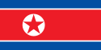

Şimali Koreya və ya rəsmi adi ilə Koreya Xalq Demokratik Respublikasi (kor. 조선민주주의인민공화국) — Şərqi Asiyada dövlət. KXDR Koreya yarimadasinin şimal hissəsində yerləşir. Şimal və şimal-qərbdə Çin, şimal-şərqdə Amonk (Çində Yalu kimi taninir) və Tümen çaylari boyunca Rusiya, cənubda isə Cənubi Koreya ilə həmsərhəddir. Ölkənin qərbində Sari dəniz, şərqində isə Yapon dənizi yerləşir. Paytaxti və ən böyük şəhəri Pxenyan, ümumi sahəsi 120,540 kvadrat kilometr, əhalisinin sayi 25 milyon nəfərdən çoxdur. Ölkənin adi kütləvi informasiya vasitələrində qeyri-rəsmi şəkildə "Şimali Koreya" kimi işlənir.Ölkənin ərazisi 122.762 km²-dir .Ölkə ərazisinin təxminən 80%-i sira dağlardan və yaylalardan ibarətdir. Ölkənin şimal-şərqində orta yüksəkliyi 1000 m olan Kema yaylasi yerləşir. Bu yaylanin şimalinda ölkənin ən yüksək zirvəsi olan Pektu daği (2774 m) yerləşir. Bu dağin zirvəsində vulkan mənşəli böyük bir göl vardir. Ölkənin ortasindan şimaldan cənuba doğru Nanqim dağlari uzanir. Bu dağlardan başlayaraq cənub-qərbə doğru istiqamətlənən Kanqnam, Myohyanq, Ancin və Myarak dağlari bir-birinə qoşularaq sira dağlar yaradir. Bu dağlar arasindaki geniş çay vadiləri Pyonqyanq və Çeryanq ovaliqlari ilə birləşir.Şimali Koreya Xalq Demokratik Respublikasi yaranan ilk gündən hakimiyyətə gəlmiş Kormi ticarət dövlət nəzarətindədir.Ölkənin ərazisi 120 540 kvadratkilometr, əhalisi 24 milyon nəfərdir. Paytaxti Pxenyan şəhəridir.1970-ci illərdə ağir iqtisadiyyatin, ordu xərclərinin və neft qiymətlərinin kəskin artimi ölkə iqtisadiyyatinin tənəzüllünə səbəb olub və bu, 1980-ci ildə defoltla nəticələnib.1994-cü ildə vəfat edən Kim İr Senin ardinca hakimiyyətə onun oğlu Kim Çen İr yiyələnib və ölkə iqtisadiyyatindaki durğunluq və izolyasiya onun rəhbərliyi illərində də davam edib.2002-ci ildə hakimiyyət islahatlara başlayib — milli valyuta devalvasiya edilib, kənd təsərrüfati məhsullarinin qiyməti sərbəstləşdirilib, kəndlərdəki kollektiv təsərrüfat növü ailə təsərrüfatlariyla əvəz edilib. Nəticədə xarici investisiyalarin həcmi kəskin artib. Təkcə Çin 2004-cü ildə Şimali Koreya iqtisadiyyatina 200 milyon ABŞ dollari həcmində yatirim qoyub. 2007-ci ildə — Cənubi Koreya prezidentinin Şimali Koreyaya səfərindən sonra bu ölkələr birləşməyə qərar veriblər və yardim üçün BMT-yə müraciət ediblər. Ancaq son illərdə Şimali Koreyada sərt kurs tərəfdarlarinin artmasi bu prosesin inkişafina mane olub, Cənubi Koreyaya rəsmi münasibət dəyişib. İqtisadi islahatlar da dayandirilib, ölkə nüvə problemi üzrə altitərəfli danişiqlarda iştirakdan imtina edib.2009-cu ildə Şimali Koreya Konstitusiyasinda dəyişiklik edərək kommunizmlə bağli bütün sözləri əsas qanunundan çixarib. Yeni dəyişikliklərə görə, güclü ordu ideologiyasi önə çixarilib və dövlət başçisi Kim Çen İrin səlahiyyətləri artirilib. Əgər 1998-ci il Konstitusiyasinda dövlət başçisinin sadəcə dövlət məsələləri ilə məşğul olmasi nəzərdə tutulurdusa, yeni dəyişikliklərə görə o, ali baş komandandir. Yeni Konstitusiyada insan haqlarinin qorunmasinin zəruriliyi də vurğulanib.2009-cu ildə Şimali Koreya texnologiyada böyük irəliləyiş edərək kosmosa süni peyk buraxib. Şimali Koreya, 2012-ci ilin 12 və 16 aprel tarixləri arasinda Unha-3 mərmisiylə orbitə 100 kilo ağirliğindaki müşahidə peyki buraxib.Şimali Koreya ölkənin təbii resurslarla zəngin olmasina baxmayaraq, adambaşina düşən ÜDM-ə görə dünyada 150-ci yerlərin birindədir. Ölkədə silah sənayesi inkişaf edib, amma vaxtaşiri ölkədə ərzaq qitliği yaranir.2009-cu ildə aparilmiş rəsmi siyahiya almaya əsasən Şimali Koreyanin əhalisi 24.051.218 nəfərdir .[4] 2016 ilin məlumatlarina görə KXDR-in əhalisi təxminən 25 milyon nəfər təşkil edir. Etnik baximdan son dərəcə homogen bir struktura malik olan Şimali Koreya əhalisinin 99,8%-i koreyalilar, 0,2%-i isə çinlilər, yaponlar, vyetnamlilar və avropalilar təşkil edir.Şimali Koreyada mətbuat dövlətin sərt nəzarətindədir. Konstitusiyada ifadə və mətbuat azadliği qeyd olunsa da, praktikada tətbiq olunmur. "Sərhədsiz Reportyorlar"in 2010-cu il hesabatina əsasən mətbuat azadliğinin vəziyyətinə görə Şimali Koreya 178 dövlət içində yalniz Eritreyani qabaqlayaraq 177-ci olub. Yalniz rejimin icazə verdiyi xəbərlər yayimlana bilər, xaricdən rejimi tənqid etmək qadağandir. Media Kim Yonq-ilin şəxsiyyət kultu altinda fəaliyyət göstərir, onun gündəlik fəaliyyəti mütəmadi yayimlanir. Media üçün əsas xəbərləri Koreya Mərkəzi Xəbər Agentliyi təmin edir. Şimali Koreyada 12 əsas qəzet və 20 əsas dövri nəşr var, hansi ki bütün nəşrlər Pxenyandadir. Qəzetlərə Rodonq Sinmun, Yoson İnminqun, Minju Çoson, Rodonqja Sinmum daxildir. Özəl mətbuat yoxdur. Şimali Koreyanin 2008-ci ildə 1.18 milyon mövcud xətti olmuş adekvat telefon sistemi var. Pxenyanda mobil telefonlarin sayi 2002-ci ildə 3000 olsa da, 2004-cü ilədək artib təxminən 20.000-ə çatmişdir. 2004-cü ilin iyununda mobil telefonlar yenidən 2008-ci ildə Misirin "Orascom" Telefon Holdinqi ilə birgə fəaliyyət nəticəsində Koryolink 3G şəbəkəsi tətbiq olunana qədər qadağan olunmuşdur. 2010-cu ilin mayinda 120.000 Şimali Koreya vətəndaşi mobil telefondan istifadə etmiş, həmin ilin sentyabrinda bu rəqəm 2 dəfədən çox artaraq 301.000-ə çatmişdir.